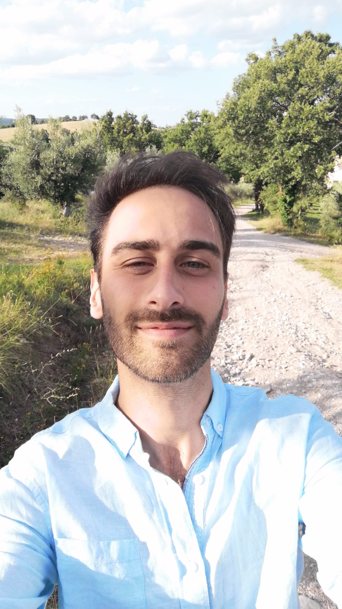

ABOUT ME
Hello! I'm Diego, and my journey has been a blend of linguistic passion, culinary experience, and tech innovation.
I was born in Urbino, a picturesque Italian village nestled amidst vibrant countryside. Urbino is a Renaissance gem, celebrated for its rich history during the 15th century. Growing up in such a serene environment provided a perfect backdrop for my early years. You can get a glimpse of my hometown's storied past through this short video.
My academic path began with a degree in Literature and Linguistics from Urbino. Though I cherished the tranquility of my hometown, my ambition led me to Bologna University, where I graduated with honors in Linguistics. An enriching year in Lille, as part of the Erasmus program, honed my French and further improved my English skills. My passion for advanced research then brought me to Paris, where I embarked on a PhD project on French partitive phrases, intended for Paris 8 University.
However, life took an unexpected turn. Despite positive feedback on my PhD proposal, I did not receive the anticipated scholarship. To sustain myself, I began working in restaurants in Paris. What seemed like a setback proved to be transformative. Through dedication and hard work, I rose from a simple employee to managing three restaurants, steering them through the challenging Covid period with notable success.
During the lockdown, I stumbled upon Natural Language Processing. This serendipitous discovery rekindled my love for linguistics and ignited a new passion for coding. I completed an intensive Python Bootcamp and delved deeper into NLP, which seamlessly integrated my dual interests in language and technology.
Determined to pivot my career, I negotiated a mutual contract termination with my employer and enrolled in a Master's program in NLP at INALCO, Sorbonne Nouvelle, and Paris Nanterre University. My journey through NLP and Machine Learning has been exhilarating, and I'm thrilled to showcase my key projects here in my portfolio.
Parallel to my academic achievements, my work experience has greatly enriched my understanding and skills in NLP and machine learning. Since March 2024, I have been working as an LLM Inference Acceleration Intern at WorldLine in Lyon, France. In this role, I have evaluated various LLMs in terms of FLOPS, latency, and output performance. My responsibilities include optimizing LLMs for specific tasks using techniques like LoRA and implementing new mechanisms to manage open-source LLMs. This role has allowed me to deepen my technical expertise and contribute to performance improvements in advanced NLP systems.
Thank you for visiting my portfolio. I look forward to connecting and collaborating with you!
